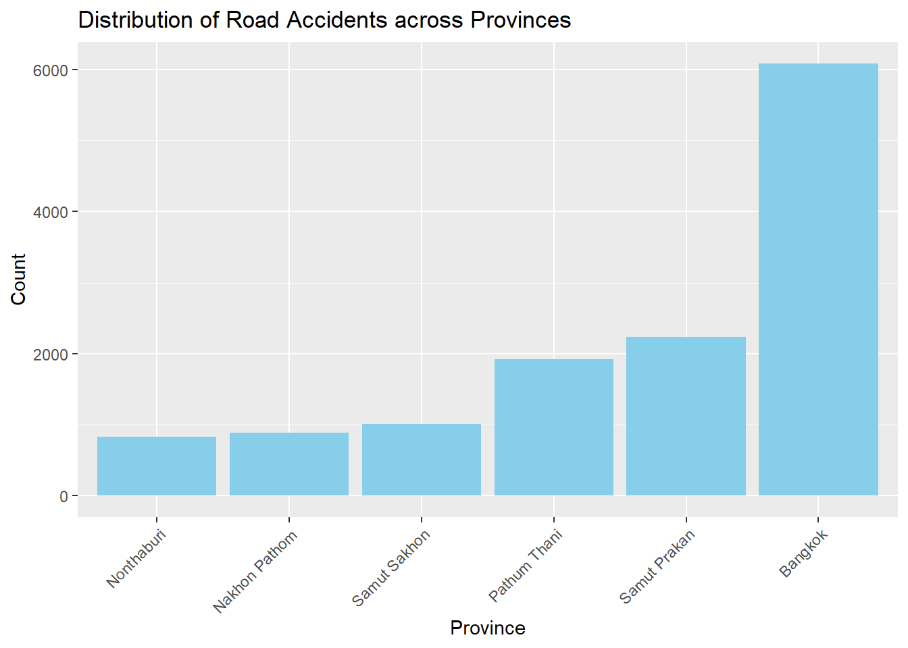
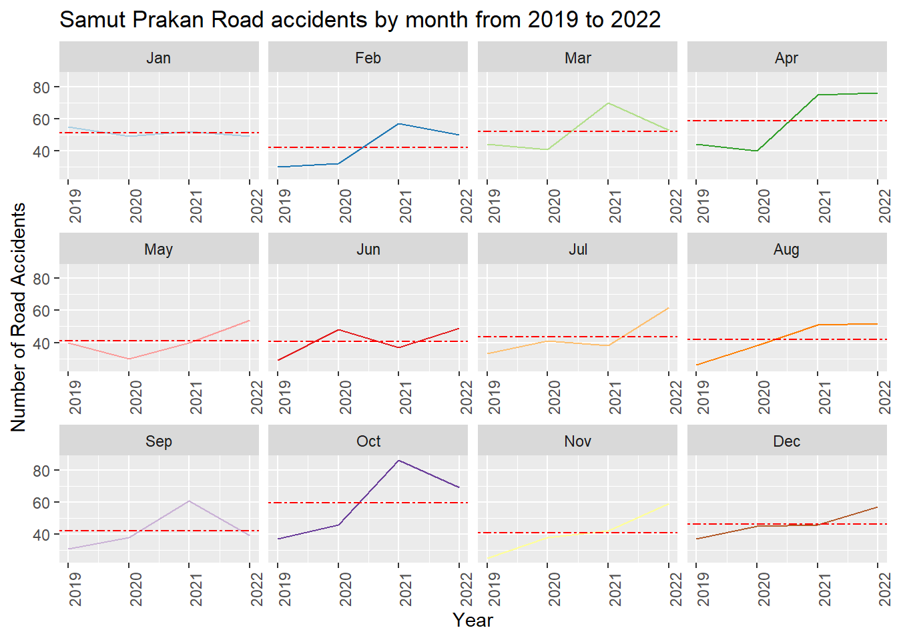
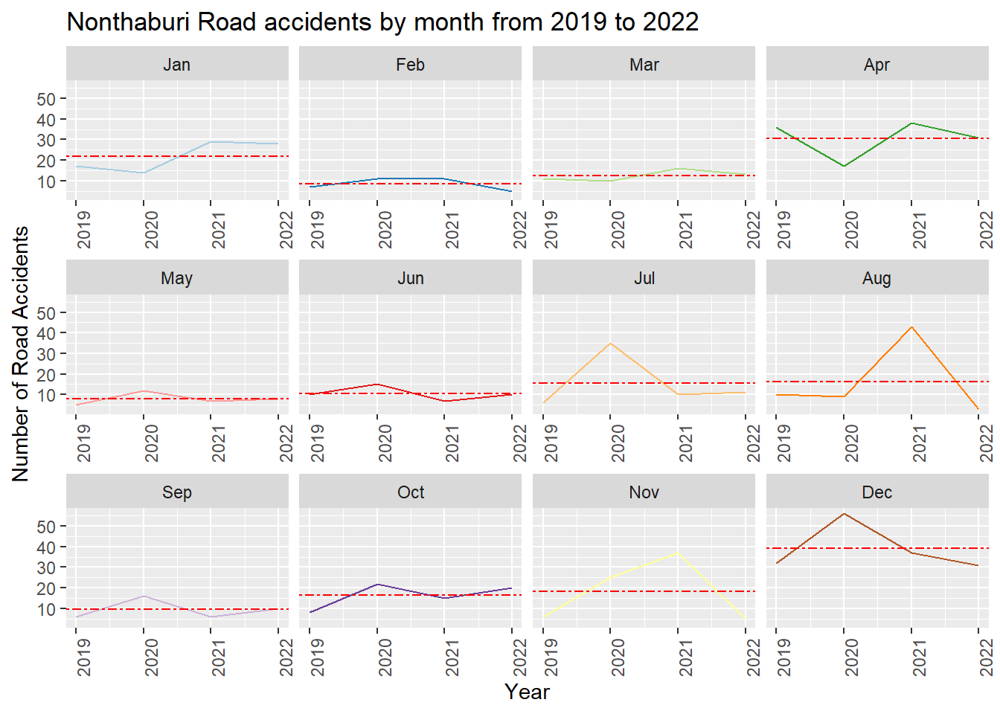
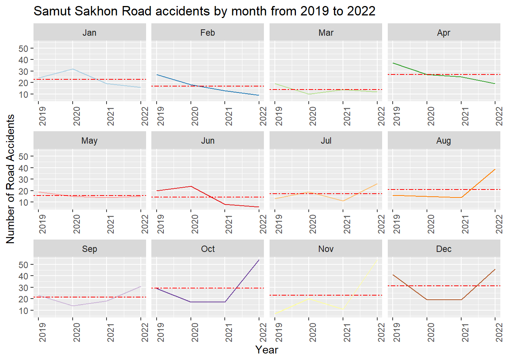
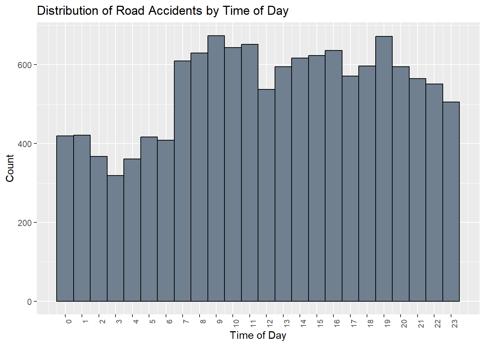
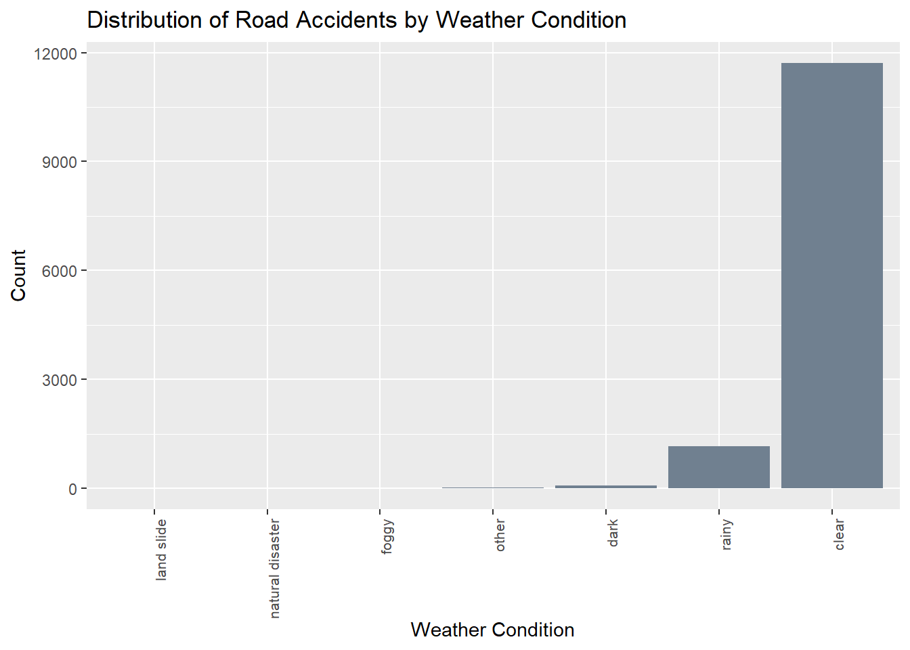
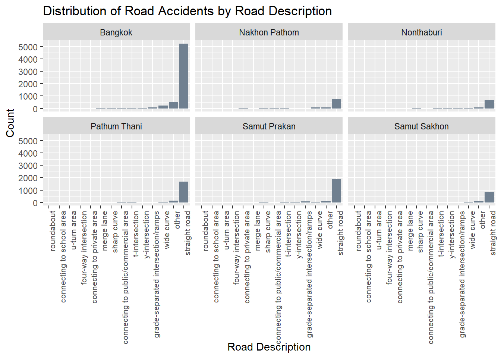
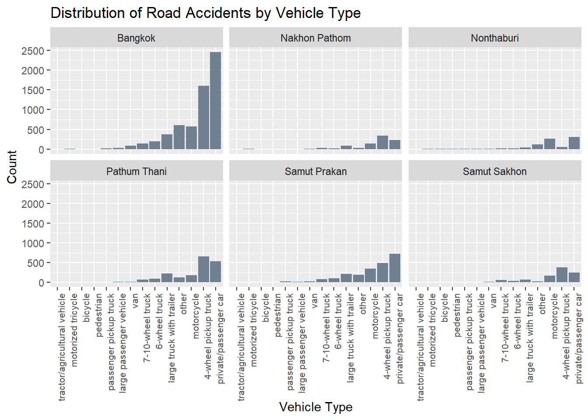
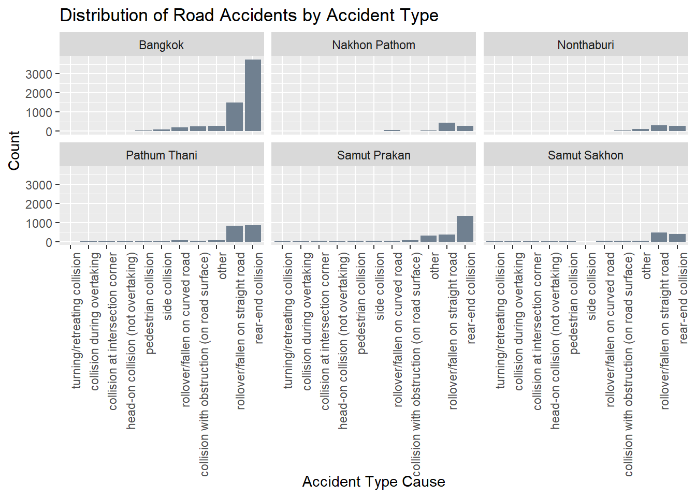
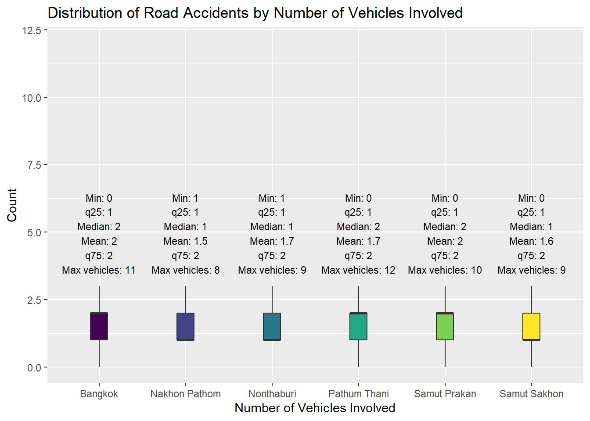

pacman::p_load(sf,spatstat,raster,maptools,tmap,tidyverse,spNetwork,DT,forcats,ggthemes,plotly)Take-home Exercise 1A
Take-Home Exercise 1: Geospatial Analytics for Public Good (Part 1A)
1. Background
According to the World Health Organisation (WHO), road traffic accidents cause the death of approximately 1.19 million people each year and leave between 20 to 50 million people with non-fatal injuries. Vulnerable road users, such as pedestrians, cyclists and motorcyclists, make up more than half of all road traffic deaths.
Road traffic injuries are the leading cause of death for children and young adults aged 5 to 29, however two-thirds of road traffic fatalities occur among people of working ages, from 18 to 59 years. Further, nine in 10 fatalities on the roads occur in low- and middle-income countries, even though these countries make up only around 60% of the world’s vehicles.
Besides human suffering, road traffic injuries also result in a heavy economic burden on victims and their families, through treatment costs for the injured and loss of productivity of those killed or disabled. More broadly, road traffic injuries have a serious impact on national economies, costing countries 3% of their annual gross domestic product.
According to the WHO, Thailand’s roads are the deadliest in Southeast Asia and among the worst in the world - about 20,000 people die in road accidents each year, or about 56 deaths a day.
Between 2014 and 2021, Thailand experienced a notable increase in accident frequencies. Specifically, 19% of all accidents in Thailand occurred on the national highways, which make up the primary public thoroughfares connecting various regions, provinces, districts, and significant locations within a comprehensive network. Within the broader context of accidents across the country, there existed a considerable 66% likelihood of encountering accident-prone zones, often termed as ‘black spots’ which are distributed as follows: 66% on straight road segments, 13% at curves, 6% at median points of cross-shaped intersections, 5% at T-shaped intersections and Y-shaped intersections, 3% at cross-shaped intersections, 2% on bridges, and 2% on steep slopes.
2. Objectives
By and large, road traffic accidents can be attributed by two major factors, namely behavioural and environmental factors.
Behavioural factors in driving are considered to be major causes of traffic accidents either in direct or indirect manner (Lewin, 1982). These factors can be further grouped into driver behavior (driver/driving style) and driver performance (driver/driving skills) (Elander, West, & French, 1993).
Environmental factors, on the other hand, includes but not limited to weather conditions such as poor visibility during heavy rain or fogs as well as road conditions such as sharp bends, slippery slopes, and blind spots.
Previous studies have demonstrated the significant potential of Spatial Point Patterns Analysis (SPPA) in exploring and identifying factors influencing road traffic accidents. However, these studies often focus solely on either behavioral or environmental factors, with limited consideration of temporal factors such as season, day of the week, or time of day.
In view of this, in this hands-on exercise, we will determine factors that affect road traffic accidents in the Bangkok Metropolitan Region (BMR) by employing both spatial and spatio-temporal point patterns analysis methods.
The specific objectives are as follows:
To visualize the spatio-temporal dynamics of road traffic accidents in BMR using appropriate statistical graphics and geovisualization methods.
To conduct detailed spatial analysis of road traffic accidents using appropriate Network Spatial Point Patterns Analysis methods.
To conduct detailed spatio-temporal analysis of road traffic accidents using appropriate Temporal Network Spatial Point Patterns Analysis methods.
3. Installing and Launching R packages
Key packages that are installed are:
sf for importing, managing, and processing vector-based geospatial data, and
spatstat, which has a wide range of useful functions for point pattern analysis. In this hands-on exercise, it will be used to perform 1st- and 2nd-order spatial point patterns analysis and derive kernel density estimation (KDE) layer
raster which reads, writes, manipulates, analyses and model of gridded spatial data (i.e. raster). In this hands-on exercise, it will be used to convert image output generate by spatstat into raster format.
maptools which provides a set of tools for manipulating geographic data. In this hands-on exercise, we mainly use it to convert Spatial objects into ppp format of spatstat.
tmap which provides functions for plotting cartographic quality static point patterns maps or interactive maps by using leaflet API.
tidyverse for performing data science tasks such as importing, wrangling and visualising data.
spNetwork which provides functions to perform Spatial Point Patterns Analysis such as kernel density estimation (KDE) and K-function on network. It can also be used to build spatial matrices (`listw’ objects like in ‘spdep’ package) to conduct any kind of traditional spatial analysis with spatial weights based on reticular distances.
The packages are loaded with the following code chunk:
For any simulation steps carried out in this exercise, we set a seed to ensure reproducibility:
set.seed(1234)4. Data
For the purpose of this exercise, three basic data sets are used:
Thailand Road Accident [2019-2022] on Kaggle - comprised records of road accidents in Thailand from ~2019 to 2022, based on information provided by the Office of the Permanent Secretary, Ministry of Transport.
5. Importing, Cleaning and Wrangling Data
5.1 Thailand Road Accident Data
The data is imported using the code below:
roadacc <- read_csv("data/rawdata/thai_road_accident_2019_2022.csv")Taking a glimpse at the data to determine the fields in the data:
glimpse(roadacc)There are 81735 rows and 18 variables. Further details about the important variables that would be needed for analysis can be found in the dropdown box below:
More information about variables for analysis
| Field | Description | Purpose of data i.e. what it might indicate |
|---|---|---|
| incident_datetime | The date and time of the accident occurrence | whether accidents tend to occur at specific:
|
| report_datetime | The date and time when the accident was reported | efficacy at which accident was reported could indicate:
|
| province_en | The name of the province in Thailand, written in English | supports the filtering of data to just BMR |
| agency | The government agency responsible for the road and traffic management | pinpoints the responsible government agency, could indicate whether there is a need for government agency to take corrective actions |
| route | The route or road segment where the accident occurred | while the data can be used to determine frequency of incident at different locations, it is not useful for our case as it’s in the Thai language |
| vehicle_type | The type of vehicle involved in the accident | can determine frequency of vehicle types involved in accidents |
| presumed_cause | The presumed cause or reason for the accident | can determine distribution of cause for accidents |
| accident_type | The type or nature of the accident | can determine distribution of nature of accidents |
| number_of_vehicles_involved | The number of vehicles involved in the accident | can determine the scale of accidents at different locations i.e. how severe/deadly |
| number_of_fatalities | The number of fatalities resulting from the accident | can determine the scale of accidents at different locations i.e. how severe/deadly |
| number_of_injuries | The number of injuries resulting from the accident | can determine the scale of accidents at different locations i.e. how severe/deadly |
| weather_condition | The weather condition at the time of the accident | can determine how much weather conditions can affect the occurrence of accidents |
| latitude | The latitude coordinate of the accident location | used for mapping and for analysis with other datasets |
| longitude | The longitude coordinate of the accident location | used for mapping and for analysis with other datasets |
| road_description | The description of the road type or configuration where the accident occurred | can determine how road types can affect the occurrence of accidents |
| slope_description | The description of the slope condition at the accident location | can determine how presence of slopes can affect the occurrence of accidents |
5.1.1 Removing unwanted variables “province_th” and “route”
We will first drop “province_th” as it indicates the provinces in the Thai language.
roadacc <- roadacc[, !names(roadacc) %in% c("province_th","route")]5.1.2 Filtering province data to area of interest - Bangkok Metropolitan Region (BMR)
We then determine the unique provinces within the dataset and scan through the province names (i.e. in case there are any entries that refer to the same province but are spelt differently/have spelling mistakes) before filtering the data to just include provinces that are within the BMR:
unique_provinces <- roadacc %>%
distinct(province_en) %>%
arrange(province_en)Based on observations, there were no spelling mistakes. As such we can proceed with filtering the data to keep our region of interest which comprises Bangkok and five adjacent provinces of Nakhon Pathom, Nonthaburi, Pathum Thani, Samut Prakan and Samut Sakhon:
roadacc <- roadacc %>%
filter(province_en %in% c("Bangkok", "Nakhon Pathom", "Nonthaburi", "Pathum Thani","Samut Prakan","Samut Sakhon"))This leaves the data with 13336 rows.
5.1.3 Removing missing data
We further clean the data by removing rows with missing data:
roadacc <- roadacc %>%
drop_na()5.1.4 Checking for duplicate accident codes
We also check if there are duplicate entries in the dataset:
roadacc$acc_code[duplicated(roadacc$acc_code) == TRUE]There are no duplicate entries.
In-class notes from Prof Kam:
During class, Prof Kam had advised to study the data carefully and shared that it was important to filter out data with incomplete coordinates (missing either longitude or latitude or both) and shared that one way to do it was via the code below:
roadacc <- roadacc %>%
filter(!is.na(longitude) & longitude != "",
!is.na(latitude) & latitude != "")As with the drop_na() code above, this way will also leave just 12986 rows of data as the missing data were found in either the longitude or latitude variables.
5.1.5 Creating a simple feature data frame
We convert roadacc data frame into a simple feature data frame and also transform the data from geographic coordinate system (EPSG: 4326 WGS84 Geographic Coordinate System) to projected coordinate system:
roadacc <- st_as_sf(roadacc,
coords = c("longitude", "latitude"),
crs=4326) %>%
st_transform(crs = 32647)Based on the summary statistics of roadacc above, it is noted that the minimum longitude is 99.85° and maximum longitude is 100.94°. While there are 2 possible projected coordinate systems for Thailand, EPSG 32647 and 32648, the appropriate projected coordinate system to transform the data to would be EPSG 32647 as the minimum and maximum longitude of roadacc falls within EPSG 32467’s area of use (between 96°E and 102°E). A comparison of the area of use for both projected coordinate systems is shown below:
| EPSG 32647 | EPSG 32648 | |
|---|---|---|
| Area of use | Between 96°E and 102°E, northern hemisphere between equator and 84°N, onshore and offshore. China. Indonesia. Laos. Malaysia - West Malaysia. Mongolia. Myanmar (Burma). Russian Federation. Thailand. | Between 102°E and 108°E, northern hemisphere between equator and 84°N, onshore and offshore. Cambodia. China. Indonesia. Laos. Malaysia - West Malaysia. Mongolia. Russian Federation. Singapore. Thailand. Vietnam. |
5.1.6 Creating new variables representing month, day of week, time of day as well as gap between incident and reporting time
The incident_datetime and report_datetime variables are in datetime field, we hence utilise these variables and the lubridate() function to generate new variables that represent:
month: “inc_month”
day of week: “inc_dayofweek”
time of day: “inc_time”
roadacc <- roadacc %>%
mutate(inc_year = year(incident_datetime)) %>%
mutate(inc_month = month(incident_datetime,
label = TRUE,
abbr = TRUE)) %>%
mutate(inc_dayofweek = wday(incident_datetime,
week_start = getOption("lubridate.week.start", 1),
label = TRUE,
abbr = TRUE)) %>%
mutate(inc_time = hour(incident_datetime))
In-class notes from Prof Kam:
Note that we can generate month in numbers or in factor format via:
roadacc <- roadacc %>%
mutate(Month_num = month(incident_datetime)) %>%
mutate(Month_fac = month(incident_datetime,
label = TRUE,
abbr = TRUE))We also determine the gap between the incident time and reporting time and create a new variable “timegap” in hours unit:
roadacc$timegap <- time_length(roadacc$report_datetime - roadacc$incident_datetime, "hours")Logically, the date and time when the accident was reported should be after the date and time of the accident occurrence. Looking at the summary statistics below, there are data entries that could have been erroneously recorded resulting in a negative time gap between report time and incident time (i.e. report time was earlier than incident time). As such, the data was further filtered to remove erroneous data to avoid affecting the analysis:
summary(roadacc$timegap)roadacc <- roadacc %>%
filter(timegap >= 0)This leaves us with 12985 rows.
5.1.7 Saving as new rds file
We then save this cleaned data as a rds file:
write_rds(roadacc,"data/rds/roadacc.rds")roadacc <- read_rds("data/rds/roadacc.rds")
In-class notes from Prof Kam:
- It is good practice to save cleaned file as a new rds file via write_rds() to avoid re-running the data cleaning and wrangling codes. write_rds() will take care of all the objects within the dataset. Once the file is saved, we can add “#| eval: false” to the data cleaning and wrangling codes to avoid re-running them.
5.2 Thailand - Subnational Administrative Boundaries on HDX
The data has different files providing details of the administrative boundaries of Thailand at different administrative levels:
Level 0 (country)
Level 1 (province)
Level 2 (district)
Level 3 (sub-district, tambon)
As our area of interest is at Level 1 (province level), we will utilise “tha_admbnda_adm1_rtsd_20220121” that reflects details at province levels and import the data using the code chunk below:
provincedata = st_read(dsn = "data/rawdata",
layer = "tha_admbnda_adm1_rtsd_20220121")We note from the above that it is a multipolygon feature data frame. We note that there are 77 features and 16 fields, and the data is in WGS84 geographic coordinate system.
We then take a glimpse of the data:
glimpse(provincedata)5.2.1 Retaining relevant variables at the province level
We note from a glimpse of the data above that there are only a few pertinent fields that we require for our analysis, specifically:
ADM1_EN: province name in english
Shape_Leng
Shape_Area
geometry
We hence filter the data to only comprise these fields to make the data frame more manageable:
provincedata <- provincedata %>%
select("ADM1_EN", "Shape_Leng","Shape_Area","geometry")5.2.2 Filtering province data to area of interest - Bangkok Metropolitan Region (BMR)
We also filter to keep only data that are relevant to our area of interest which is BMR:
provincedata <- provincedata %>%
filter(ADM1_EN %in% c("Bangkok", "Nakhon Pathom", "Nonthaburi", "Pathum Thani","Samut Prakan","Samut Sakhon"))This leaves 6 rows of data and 4 variables.
5.2.3 Assigning the correct EPSG code for the projected coordinate system
From the code chunk below, it is noted that the EPSG code for the selectedboundaries data frame is EPSG: 4326:
st_crs(provincedata)We will need to reproject provincedata from EPSG code to EPSG: 32647 which is the projected coordinate system to use for BMR, our area of interest:
provincedata32647 <- st_transform(provincedata,
crs = 32647)We check if the EPSG code has been correctly assigned:
st_crs(provincedata32647)5.2.4 Saving as a new rds file
We save this cleaned data as a rds file:
write_rds(provincedata32647,"data/rds/provincedata32647.rds")provincedata32647 <- read_rds("data/rds/provincedata32647.rds")We visualise our provincedata32647:
tmap_mode('plot')
tm_shape(provincedata32647)+
tm_polygons()5.3 Thailand Roads (OpenStreetMap Export) on HDX
We import the data as follows:
roadlines = st_read(dsn = "data/rawdata",
layer = "hotosm_tha_roads_lines_shp")We then glimpse at the data:
glimpse(roadlines)st_geometry(roadlines)The dataset is of the multilinestring geometry and is very large, with 2792590 rows and 15 variables but we only need to extract relevant information that lie within the BMR for analysis.
5.3.1 Assigning a EPSG code and reprojecting the data
Based on the code chunk below, it is noted that the coordinate system of the roadlines data is missing.
st_crs(roadlines)Based on the values of the geometry in roadlines, the coordinates seem to be in geographic (latitude/longitude) form, in degrees, typically in a CRS like EPSG:4326 (WGS 84) used for global geographic coordinates. We hence assign the missing EPSG code using the code chunk below:
roadlines4326 <- st_set_crs(roadlines,4326)We check the CRS using the code chunk below:
st_crs(roadlines4326)For analysis, we would eventually need to overlay the roadlines4326 data with the selectedboundaries32647 data to determine the roads that lie within BMR. In order to perform geoprocessing using two geospatial data, both geospatial data would need to be projected using similar coordinate systems - in this case, it its EPSG: 32647:
roadlines32647 <- st_transform(roadlines4326, crs = 32647)We check the CRS code again:
st_crs(roadlines32647)5.3.2 Retaining relevant/useful variables
Based on the columns in the data frame roadlines32647, the columns that seem relevant/useful to retain for analysis are “highway”, “surface”, “smoothness”, “width”, “lanes”, “oneway”, “bridge” and “geometry”.
However before going ahead to retain these variables, we determine the presence of missing data within roadlines32647:
missing_counts <- sapply(roadlines32647, function(x) sum(is.na(x)))
print(missing_counts)Based on the result we obtained, more than 60% of data is missing for the variable “source” and more than 80% of data is missing for the variables “name”, “name_en”, “surface”, “smoothness”, “width”, “lanes”, “oneway”, “bridge”, “layer”, “source” and “name_th”. Given the extent of missing data, we will omit these columns as they would not provide useful information for analysis and only retain the relevant/useful columns “highway” and “geometry” with no missing data:
selectedroadlines <- roadlines32647 %>%
select("highway", "geometry")5.3.3 Retaining selected classes of highway
The code chunk below is used to determine the types of highways in the selectedroadlines data frame:
unique_highway <- unique(selectedroadlines$highway)
unique_highway <- sort(unique_highway)
unique_highwayWhile there are several classes of highway, our analysis will focus on the major classes of highway as stated on Thailand Highway Classification, otherwise the map will be too overcrowded for analysis and we might also experience lags in rendering the Quarto document.
A detailed explanation on the selected major highways is indicated in the table below:
| Types of highway | Details | Included for analysis? |
|---|---|---|
| motorway | Expressway with full access control (source) | Yes |
| primary | Top-level urban road across the city connecting trunk to trunk, or road of equal or greater importance than the primary intercity highway that runs through that city (source) | Yes |
| secondary | Main urban road connecting primary to primary or higher, or road of equal or greater importance than the secondary intercity highway that runs through that city. Based on table above, motorcars, motorcycles and pedestrians all have access (source) | Yes |
| tertiary | Roads that are more important than regular unclassified or residential roads, or roads that connect several unclassified or residential roads. Based on table above, motorcars, motorcycles and pedestrians all have access (source) | Yes |
| trunk | Based on table above, motorcars, motorcycles and pedestrians all have access (source) | Yes |
selectedroadlines <- selectedroadlines %>%
filter(highway %in% c("motorway","primary","secondary","tertiary","trunk"))5.3.4 Clipping the data to be within area of interest
We require only a subset of the selectedroadlines data to just roads within our area of interest, BMR and hence we utilise st_intersection() to find retain roads that are within the BMR boundaries given by provincedata32647:
roadsbkk <- st_intersection(selectedroadlines,provincedata32647)This reduced the data to 19386 rows of data.
We take a quick look at the geometry and note that the plot has cleaned up significantly. We will proceed with this data:
plot(st_geometry(roadsbkk))5.3.5 Checking the geometry of roadsbkk
We then check the geometry of roadsbkk:
geometry_types <- roadsbkk %>%
st_geometry_type() %>%
as.character() %>%
unique()
geometry_typesBased on the output from above, the roadsbkk data comprises both linestring and multilinestring geometries. Linestring represents a single line, while MultiLinestring represents a collection of multiple lines. We need to simplify the data structure by converting multilinestring to linestring geometry to facilitate downstream analysis as the use of multilinestring might lead to error.
We utilise the st_cast() function to break down multilinestring geometries to linestring geometries:
roadsbkk <- st_cast(roadsbkk,"LINESTRING",group_or_split = TRUE)We double check the geometry types and note from the output below that the geometry is now just linestring:
geometry_types <- roadsbkk %>%
st_geometry_type() %>%
as.character() %>%
unique()
geometry_types5.3.6 Saving as new rds file
We save this cleaned data as a rds file:
write_rds(roadsbkk,"data/rds/roadsbkk.rds")roadsbkk <- read_rds("data/rds/roadsbkk.rds")6. Exploratory Data Analysis (EDA)
We carry some EDA to understand how the occurrences of road accidents could be influenced by different factors.
6.1 Distribution of Road Accidents across Provinces
Code
tmap_mode('plot')
tm_shape(provincedata32647) +
tm_polygons() +
tm_shape(roadacc) +
tm_dots(col ='red') +
tm_shape(roadsbkk)+
tm_lines(col = 'black')As seen from the map above, road accidents within the BMR seem to be more concentrated within the provinces on the right side (Bangkok, Pathum Thani and Samut Prakan). Plotting the distribution of road accidents across provinces, we note from the plot below that Bangkok has the highest occurrences of road accidents in the BMR, followed by Samut Prakan, Pathum Thani, Samut Sakhon, Nakhon Pathom and Nonthaburi.
Code
ggplot(roadacc, aes(x = fct_reorder(province_en, province_en, .fun = length))) +
geom_bar(fill = "skyblue") +
labs(title = "Distribution of Road Accidents across Provinces", x = "Province", y = "Count") +
theme(axis.text.x = element_text(angle = 45, hjust = 1))
6.2 Distribution of Road Accidents by agency
Code
ggplot(roadacc, aes(x = fct_reorder(agency, agency, .fun = length))) +
geom_bar(fill = "lightgreen") +
labs(title = "Distribution of Road Accidents by Agency", x = "Agency", y = "Count") +
theme(axis.text.x = element_text(angle = 45, hjust = 1))As noted from the plot, the Department of Highways is responsible for the most occurrences of road accidents in the BMR, followed by Department of Rural Roads and Expressway Authority of Thailand.
6.3 Distribution of Road Accidents by time
We also analyse the road accidents by time, namely by year, by month, by day of week and by time of day.
6.3.1 By year
Code
ggplot(roadacc, aes(x = inc_year)) +
geom_bar(fill = "slategrey") +
labs(title = "Distribution of Road Accidents by Year", x = "Year", y = "Count") +
facet_wrap(~province_en)+
theme(axis.text.x = element_text(angle = 90, hjust = 1,size = 8))We note from above that the number of road accidents has generally been increasing in Bangkok and Samut Prakan from 2019 to 2022.
- This is with the exception of a drop in 2021 in Bangkok - this could potentially be due to the surge of COVID-19 cases in Thailand in 2021 which led to a lockdown which meant that there were less tourists, vehicles and pedestrians on the roads, and lower occurrences of road accidents.
We note that the number of road accidents in Nonthaburi and Pathum Thani increased from 2019 to 2021 and fell in 2022.
We note that the number of road accidents in Samut Sakhon fell from 2019 to 2021 but increased in 2022.
Of the 6 provinces, we note that only Nakhon Pathom experienced a fall in road accidents from 2019 to 2022.
6.3.2 By month
6.3.2.1 Overall
Code
ggplot(roadacc, aes(x = inc_month)) +
geom_bar(fill = "slategrey") +
labs(title = "Distribution of Road Accidents by Month", x = "Month", y = "Count")+
scale_x_discrete(limits = c("Jan", "Feb", "Mar", "Apr", "May", "Jun", "Jul", "Aug", "Sep", "Oct", "Nov", "Dec")) +
theme(axis.text.x = element_text(angle = 90, hjust = 1,size = 8))Based on the plot above, most road accidents occur in Jan, Apr, Oct and Dec.
We also observe the data by month across the years using cycle plots that would enable us to observe cyclical/seasonal patterns, if present.
6.3.2.2 By month across years
To plot the distribution of road accidents by months across the years, we create a roadacc_month file that groups the road accidents per month for each year.
Code
roadacc_month <- roadacc %>%
group_by(inc_year,inc_month) %>%
summarise(count = n(), .groups = 'drop')Code
write_rds(roadacc_month,"data/rds/roadacc_month.rds")Code
roadacc_month <- read_rds("data/rds/roadacc_month.rds")Code
hline.data <- roadacc_month %>%
group_by(inc_month) %>%
summarise(avgvalue = mean(count))
ggplot(data = roadacc_month, aes(x = inc_year, y = count)) +
geom_line(aes(group = inc_month, colour = as.factor(inc_month))) +
geom_hline(aes(yintercept=avgvalue),
data=hline.data,
linetype=6,
colour="red",
size=0.5)+
facet_wrap(~inc_month,scales = "free_x")+
labs(title = "Road accidents by month from 2019 to 2022",
colour = "Month") +
xlab("Year")+
ylab("Number of Road Accidents")+
scale_color_brewer(palette = "Paired") +
theme(axis.text.x = element_text(angle = 90),
legend.position = "none")Based on the plot, we observe the following:
Apr, Oct and Dec have the highest average number of road accidents across the years
Occurrences of road accidents in Jan and Feb seem to generally be decreasing over the years, with the number of road accidents in 2022 for both months falling below the average number of road accidents for the month across 2019 to 2022.
Occurrences of road accidents in Jul, Aug, Oct to Dec seem to generally be increasing over the years. Based on this observation alone, the increase in road accidents could potentially be due to the rainy season between Jul to Oct and the presence of a higher population due to peak tourist seasons in Nov and Dec.
Occurrences of road accidents in Mar to Jun and Sep generally do not fluctuate much over the years.
6.3.2.3 By month by province
Code
roadacc_month_bkk <- roadacc %>%
filter(province_en=="Bangkok") %>%
group_by(inc_year,inc_month) %>%
summarise(count = n(), .groups = 'drop')
roadacc_month_sp <- roadacc %>%
filter(province_en=="Samut Prakan") %>%
group_by(inc_year,inc_month) %>%
summarise(count = n(), .groups = 'drop')
roadacc_month_n <- roadacc %>%
filter(province_en=="Nonthaburi") %>%
group_by(inc_year,inc_month) %>%
summarise(count = n(), .groups = 'drop')
roadacc_month_pt <- roadacc %>%
filter(province_en=="Pathum Thani") %>%
group_by(inc_year,inc_month) %>%
summarise(count = n(), .groups = 'drop')
roadacc_month_np <- roadacc %>%
filter(province_en=="Nakhon Pathom") %>%
group_by(inc_year,inc_month) %>%
summarise(count = n(), .groups = 'drop')
roadacc_month_ss <- roadacc %>%
filter(province_en=="Samut Sakhon") %>%
group_by(inc_year,inc_month) %>%
summarise(count = n(), .groups = 'drop')Saving them as rds files:
Code
write_rds(roadacc_month_bkk,"data/rds/roadacc_month_bkk.rds")
write_rds(roadacc_month_sp,"data/rds/roadacc_month_sp.rds")
write_rds(roadacc_month_n,"data/rds/roadacc_month_n.rds")
write_rds(roadacc_month_pt,"data/rds/roadacc_month_pt.rds")
write_rds(roadacc_month_np,"data/rds/roadacc_month_np.rds")
write_rds(roadacc_month_ss,"data/rds/roadacc_month_ss.rds")Loading the newly created rds files into R:
Code
roadacc_month_bkk <- read_rds("data/rds/roadacc_month_bkk.rds")
roadacc_month_sp <- read_rds("data/rds/roadacc_month_sp.rds")
roadacc_month_n <- read_rds("data/rds/roadacc_month_n.rds")
roadacc_month_pt <- read_rds("data/rds/roadacc_month_pt.rds")
roadacc_month_np <- read_rds("data/rds/roadacc_month_np.rds")
roadacc_month_ss <- read_rds("data/rds/roadacc_month_ss.rds")Code
hline.data <- roadacc_month_bkk %>%
group_by(inc_month) %>%
summarise(avgvalue = mean(count))
ggplot(data = roadacc_month_bkk, aes(x = inc_year, y = count)) +
geom_line(aes(group = inc_month, colour = as.factor(inc_month))) +
geom_hline(aes(yintercept=avgvalue),
data=hline.data,
linetype=6,
colour="red",
size=0.5)+
facet_wrap(~inc_month,scales = "free_x")+
labs(title = "Bangkok Road accidents by month from 2019 to 2022",
colour = "Month") +
xlab("Year")+
ylab("Number of Road Accidents")+
scale_color_brewer(palette = "Paired") +
theme(axis.text.x = element_text(angle = 90),
legend.position = "none")The following observations were made:
Occurrences of road accidents in Jan seem to be fluctuating, with the number of road accidents decreasing from 2019 to 2021 then increasing in 2022.
Occurrences of road accidents in Feb seem to generally be decreasing over the years, with the number of road accidents in 2022 falling below the average number of road accidents for the month across 2019 to 2022.
Occurrences of road accidents in Jul to Dec seem to generally be increasing over the years. Based on this observation alone, the increase in road accidents could potentially be due to the rainy season between Jul to Oct and the presence of a higher population due to peak tourist seasons in Nov and Dec.
Occurrences of road accidents in Mar to Jun generally do not fluctuate much over the years.
Code
hline.data <- roadacc_month_sp %>%
group_by(inc_month) %>%
summarise(avgvalue = mean(count))
ggplot(data = roadacc_month_sp, aes(x = inc_year, y = count)) +
geom_line(aes(group = inc_month, colour = as.factor(inc_month))) +
geom_hline(aes(yintercept=avgvalue),
data=hline.data,
linetype=6,
colour="red",
size=0.5)+
facet_wrap(~inc_month,scales = "free_x")+
labs(title = "Samut Prakan Road accidents by month from 2019 to 2022",
colour = "Month") +
xlab("Year")+
ylab("Number of Road Accidents")+
scale_color_brewer(palette = "Paired") +
theme(axis.text.x = element_text(angle = 90),
legend.position = "none")
The following observations were made:
Occurrences of road accidents in Jan seem to generally be decreasing over the years, with the number of road accidents in 2022 falling below the average number of road accidents for the month across 2019 to 2022.
Occurrences of road accidents in Apr to Aug and Nov to Dec seem to generally be increasing over the years. Based on this observation alone, the increase in road accidents could potentially be due to the hotter and rainier seasons in Apr to Aug and the presence of a higher population due to peak tourist seasons in May, Jun, Nov and Dec.
Occurrences of road accidents in Feb to Mar and Sep to Oct increased initially then fell towards 2022.
Code
hline.data <- roadacc_month_n %>%
group_by(inc_month) %>%
summarise(avgvalue = mean(count))
ggplot(data = roadacc_month_n, aes(x = inc_year, y = count)) +
geom_line(aes(group = inc_month, colour = as.factor(inc_month))) +
geom_hline(aes(yintercept=avgvalue),
data=hline.data,
linetype=6,
colour="red",
size=0.5)+
facet_wrap(~inc_month,scales = "free_x")+
labs(title = "Nonthaburi Road accidents by month from 2019 to 2022",
colour = "Month") +
xlab("Year")+
ylab("Number of Road Accidents")+
scale_color_brewer(palette = "Paired") +
theme(axis.text.x = element_text(angle = 90),
legend.position = "none")
The following observations were made:
Occurrences of road accidents in Feb seem to generally be decreasing over the years.
Occurrences of road accidents in Jan seem to generally be increasing over the years.
Occurrences of road accidents in Jul, Aug, Nov and Dec increased initially then fell towards 2022.
Occurrences of road accidents in Mar to Jun, Sep and Oct seem to fluctuate generally around the monthly average across the years.
As compared to Bangkok, Samut Prakan and Pathum Thani, the number of road accidents in Nonthaburi seem to be lesser, indicating that roads are more well managed in Nonthaburi.
Code
hline.data <- roadacc_month_pt %>%
group_by(inc_month) %>%
summarise(avgvalue = mean(count))
ggplot(data = roadacc_month_pt, aes(x = inc_year, y = count)) +
geom_line(aes(group = inc_month, colour = as.factor(inc_month))) +
geom_hline(aes(yintercept=avgvalue),
data=hline.data,
linetype=6,
colour="red",
size=0.5)+
facet_wrap(~inc_month,scales = "free_x")+
labs(title = "Pathum Thani Road accidents by month from 2019 to 2022",
colour = "Month") +
xlab("Year")+
ylab("Number of Road Accidents")+
scale_color_brewer(palette = "Paired") +
theme(axis.text.x = element_text(angle = 90),
legend.position = "none")The following observations were made:
- Occurrences of road accidents in Jun to Aug and Oct seem to generally be increasing over the years. This could be explained by the rainier seasons in Thailand during this period.
- Occurrences of road accidents in Mar, Apr, May and Nov increased initially then fell towards 2022.
- Occurrences of road accidents in Jan, Feb, Sep and Dec seem to fluctuate generally around the monthly average across the years.
Code
hline.data <- roadacc_month_np %>%
group_by(inc_month) %>%
summarise(avgvalue = mean(count))
ggplot(data = roadacc_month_np, aes(x = inc_year, y = count)) +
geom_line(aes(group = inc_month, colour = as.factor(inc_month))) +
geom_hline(aes(yintercept=avgvalue),
data=hline.data,
linetype=6,
colour="red",
size=0.5)+
facet_wrap(~inc_month,scales = "free_x")+
labs(title = "Nakhon Pathom Road accidents by month from 2019 to 2022",
colour = "Month") +
xlab("Year")+
ylab("Number of Road Accidents")+
scale_color_brewer(palette = "Paired") +
theme(axis.text.x = element_text(angle = 90),
legend.position = "none")The following observations were made:
- Occurrences of road accidents in Jan to Mar, May, Jul to Dec seem to generally be decreasing over the years.
- Occurrences of road accidents in Apr and Jun seem to be fluctuating around the monthly average across the years.
- Based on these observations, it seems like road accidents are much lesser in Nakhon Pathom as compared to the other provinces and it is the only province with no obvious increase in occurrences of road accidents across the years, this indicates that the province is more well managed as compared to the other 5 provinces.
Code
hline.data <- roadacc_month_ss %>%
group_by(inc_month) %>%
summarise(avgvalue = mean(count))
ggplot(data = roadacc_month_ss, aes(x = inc_year, y = count)) +
geom_line(aes(group = inc_month, colour = as.factor(inc_month))) +
geom_hline(aes(yintercept=avgvalue),
data=hline.data,
linetype=6,
colour="red",
size=0.5)+
facet_wrap(~inc_month,scales = "free_x")+
labs(title = "Samut Sakhon Road accidents by month from 2019 to 2022",
colour = "Month") +
xlab("Year")+
ylab("Number of Road Accidents")+
scale_color_brewer(palette = "Paired") +
theme(axis.text.x = element_text(angle = 90),
legend.position = "none")
The following observations were made:
- Occurrences of road accidents in Jan, Feb, Apr and Jun seem to generally be decreasing over the years.
- Occurrences of road accidents in Jul to Dec seem to be increasing over the years. Based on this observation alone, the increase in road accidents could potentially be due to the hotter and rainier seasons in Jul to Oct and the presence of a higher population due to peak tourist seasons in Nov and Dec.
- Occurrences of road accidents in Mar and May seem to fluctuate generally around the monthly average across the years.
6.3.3 By day of week
Code
ggplot(roadacc, aes(x = inc_dayofweek)) +
geom_bar(fill = "slategrey") +
labs(title = "Distribution of Road Accidents by Day of Week", x = "Day of Week", y = "Count") +
theme(axis.text.x = element_text(angle = 90, hjust = 1,size = 8))We note from the plot that road accidents occur mostly on Fri and Sat and this could be explained by these days being the start of the weekend, and more people and vehicles may be out on the roads and in public places, which increase the chances of road accidents occuring.
Code
ggplot(roadacc, aes(x = inc_dayofweek)) +
geom_bar(fill = "slategrey") +
labs(title = "Distribution of Road Accidents by Day of Week", x = "Day of Week", y = "Count") +
facet_wrap(~province_en, scales = "fixed")Code
theme(axis.text.x = element_text(angle = 90, hjust = 1,size = 8))List of 1
$ axis.text.x:List of 11
..$ family : NULL
..$ face : NULL
..$ colour : NULL
..$ size : num 8
..$ hjust : num 1
..$ vjust : NULL
..$ angle : num 90
..$ lineheight : NULL
..$ margin : NULL
..$ debug : NULL
..$ inherit.blank: logi FALSE
..- attr(*, "class")= chr [1:2] "element_text" "element"
- attr(*, "class")= chr [1:2] "theme" "gg"
- attr(*, "complete")= logi FALSE
- attr(*, "validate")= logi TRUEAcross the provinces, it is obvious that road accidents occur most often on Fri and Sat in Bangkok. However, for the other provinces, the difference is not so obvious and it seems like the occurrences of road accidents are more well spread out across the week. This could be explained by Bangkok being a prime tourist destination and major urban centre, and it could attract a greater crowd from within and outside of Thailand over the weekend, hence leading to greater traffic on the road and higher chances of road accidents occurring.
6.3.4 By time of day
Code
ggplot(roadacc, aes(x = inc_time)) +
geom_histogram(binwidth = 1, fill = "slategrey", color = "black") +
scale_x_continuous(breaks = seq(0, 23, 1))+
labs(title = "Distribution of Road Accidents by Time of Day",
x = "Time of Day",
y = "Count") +
theme(axis.text.x = element_text(angle = 90, hjust = 1,size = 8))
Based on the chart, it is observed that road accidents occur more often between 7am to 11pm as compared to 12 midnight to 6am. This could be explained by 7am to 11pm being the time when most are awake for their daily activities and the roads are likely to have higher activity, which result in higher chances of occurrences of road accidents. The top two timings at which road accidents occur are at 9am and 7pm and this could be explained by it being the peak hour at which the general population i.e. workers, school students get to and get off work and school.
Code
ggplot(roadacc, aes(x = inc_time)) +
geom_histogram(binwidth = 1, fill = "slategrey", color = "black") +
scale_x_continuous(breaks = seq(0, 23, 1))+
labs(title = "Distribution of Road Accidents by Time of Day",
x = "Time of Day",
y = "Count") +
facet_wrap(~province_en, scales = "fixed")+
theme(axis.text.x = element_text(angle = 90, hjust = 1,size = 8))Bangkok, Samut Prakan and Pathum Thani also seem to follow the general observation seen under the overall chart for occurrences of road accidents by time day i.e. road accidents generally occur more during 7am to 11pm and peak timings are during the going to and getting off work/school hours at around 9am and 7pm. This is less obvious for the other provinces.
6.4 Distribution of Road Accidents by weather condition
Code
ggplot(roadacc, aes(x = fct_reorder(weather_condition, weather_condition, .fun = length))) +
geom_bar(fill = "slategrey") +
labs(title = "Distribution of Road Accidents by Weather Condition", x = "Weather Condition", y = "Count") +
theme(axis.text.x = element_text(angle = 90, hjust = 1,size = 8))
Based on the plot, it can be seen that road accidents most frequently occur during clear weather conditions followed by rainy and then dark conditions. This could imply that road accidents are more heavily influenced by other behavioural or environmental factors besides the weather condition.
Code
ggplot(roadacc, aes(x = fct_reorder(weather_condition, weather_condition, .fun = length))) +
geom_bar(fill = "slategrey") +
labs(title = "Distribution of Road Accidents by Weather Condition", x = "Weather Condition", y = "Count") +
facet_wrap(~province_en)+
theme(axis.text.x = element_text(angle = 90, hjust = 1,size = 8))Across provinces, similar observations were made as it was observed that road accidents mostly occur during clear weather conditions, followed by rainy and then dark weather conditions.
6.5 Distribution of Road Accidents by road description
Code
ggplot(roadacc, aes(x = fct_reorder(road_description, road_description, .fun = length))) +
geom_bar(fill = "slategrey") +
labs(title = "Distribution of Road Accidents by Road Description", x = "Road Description", y = "Count") +
theme(axis.text.x = element_text(angle = 90, hjust = 1,size = 8))Based on the plot, road accidents mostly occur on straight roads, roads categorised as other, followed by wide curve and then grade-separated intersection/ramps. Combining this observation with that for weather conditions - that road accidents mostly occur during clear weather conditions and straight roads - which are conditions under which one would not expect road accidents to occur, it could imply that the occurrence of road accidents are more heavily influenced by behavioural factors.
Code
ggplot(roadacc, aes(x = fct_reorder(road_description, road_description, .fun = length))) +
geom_bar(fill = "slategrey") +
labs(title = "Distribution of Road Accidents by Road Description", x = "Road Description", y = "Count") +
facet_wrap(~province_en)+
theme(axis.text.x = element_text(angle = 90, hjust = 1,size = 8))
Across provinces, similar observations were made as it was observed that road accidents mostly occur on straight roads, roads categorised as other, followed by wide curve and then grade-separated intersection/ramps.
6.6 Distribution of Road Accidents by slope description
Code
ggplot(roadacc, aes(x = fct_reorder(slope_description, slope_description, .fun = length))) +
geom_bar(fill = "slategrey") +
labs(title = "Distribution of Road Accidents by Slope Description", x = "Slope Description", y = "Count") +
theme(axis.text.x = element_text(angle = 90, hjust = 1,size = 8))Based on the plot, road accidents where there are no slopes. Combining this observation with the above observations - that road accidents mostly occur during clear weather conditions and on straight roads with no slope - which are conditions under which one would not expect road accidents to occur, it could imply that the occurrence of road accidents are more heavily influenced by behavioural factors.
Code
ggplot(roadacc, aes(x = fct_reorder(slope_description, slope_description, .fun = length))) +
geom_bar(fill = "slategrey") +
labs(title = "Distribution of Road Accidents by Slope Description", x = "Slope Description", y = "Count") +
facet_wrap(~province_en)+
theme(axis.text.x = element_text(angle = 90, hjust = 1,size = 8))Across provinces, similar observations were made as it was observed that road accidents mostly occur on roads with no slope.
6.7 Distribution of Road Accidents by vehicle type
Code
ggplot(roadacc, aes(x = fct_reorder(vehicle_type, vehicle_type, .fun = length))) +
geom_bar(fill = "slategrey") +
labs(title = "Distribution of Road Accidents by Vehicle Type", x = "Vehicle Type", y = "Count") +
theme(axis.text.x = element_text(angle = 90, hjust = 1,size = 8))Based on the plot, road accidents mostly involve private/passenger car, followed by 4-wheel pickup truck, motorcycle as the top 3 vehicles. These are small to mid-sized vehicles.
We do a more detailed analysis at the province level:
Code
ggplot(roadacc, aes(x = fct_reorder(vehicle_type, vehicle_type, .fun = length))) +
geom_bar(fill = "slategrey") +
labs(title = "Distribution of Road Accidents by Vehicle Type", x = "Vehicle Type", y = "Count") +
facet_wrap(~province_en)+
theme(axis.text.x = element_text(angle = 90, hjust = 1,size = 8))
Bangkok and Samut Prakan follow the same general observation seen under the overall chart for vehicle type involved in road accidents i.e. road accidents mostly involve private/passenger car, followed by 4-wheel pickup truck, motorcycle as the top 3 vehicles. However the following were observed for the other provinces:
Road accidents in Nakhon Pathom, Pathum Thani and Samut Sakhon mostly involved 4-wheel pickup truck
4-wheel pickup truck is not one of the top 3 vehicles involved in road accidents in Nonthaburi
6.8 Distribution of Road Accidents by presumed cause
Code
ggplot(roadacc, aes(x = fct_reorder(presumed_cause, presumed_cause, .fun = length))) +
geom_bar(fill = "slategrey") +
labs(title = "Distribution of Road Accidents by Presumed Cause", x = "Presumed Cause", y = "Count") +
theme(axis.text.x = element_text(angle = 90, hjust = 1))
The top presumed cause for accident is speeding.
6.9 Distribution of Road Accidents by accident type
Code
ggplot(roadacc, aes(x = fct_reorder(accident_type, accident_type, .fun = length))) +
geom_bar(fill = "slategrey") +
labs(title = "Distribution of Road Accidents by Accident Type", x = "Accident Type Cause", y = "Count") +
theme(axis.text.x = element_text(angle = 90, hjust = 1))The top two accident type for road accidents are rear-end collision and rollover/fallen on straight road.
Code
ggplot(roadacc, aes(x = fct_reorder(accident_type, accident_type, .fun = length))) +
geom_bar(fill = "slategrey") +
labs(title = "Distribution of Road Accidents by Accident Type", x = "Accident Type Cause", y = "Count") +
facet_wrap(~province_en)+
theme(axis.text.x = element_text(angle = 90, hjust = 1))
Bangkok, Pathum Thani and Samut Prakan follow the same general observation seen under the overall chart that the top two accident type for road accidents are rear-end collision followed by rollover/fallen on straight road. For Nakhon Pathom, Nonthaburi and Samut Sakhon, the top accident type is rollover/fallen on straight road followed by rear-end collision.
6.10 Distribution of number of vehicles involved
Code
summary_stats <- roadacc %>%
group_by(province_en) %>%
summarise(
median_vehicles = median(number_of_vehicles_involved, na.rm = TRUE),
mean_vehicles = mean(number_of_vehicles_involved, na.rm = TRUE),
min_vehicles = min(number_of_vehicles_involved,na.rm = TRUE),
q25 = quantile(number_of_vehicles_involved, 0.25, na.rm = TRUE),
q75 = quantile(number_of_vehicles_involved, 0.75, na.rm = TRUE),
max_vehicles = max(number_of_vehicles_involved,na.rm = TRUE),
.groups = 'drop'
) %>%
mutate(label = paste0("Min: ", round(min_vehicles,1),
"\nq25: ", round(q25,1),
"\nMedian: ", round(median_vehicles, 1),
"\nMean: ", round(mean_vehicles, 1),
"\nq75: ", round(q75,1),
"\nMax vehicles: ", round(max_vehicles,1)
))
ggplot(roadacc,
aes(x=province_en,
y=number_of_vehicles_involved,
fill = province_en))+
geom_boxplot(width = .20,
outlier.shape = NA)+
geom_text(data = summary_stats,
aes(x = province_en, y = q75, label = label),
vjust = -0.5,
size = 3)+
ggtitle("Distribution of Road Accidents by Number of Vehicles Involved") +
labs(title = "Distribution of Road Accidents by Number of Vehicles Involved", x = "Number of Vehicles Involved", y = "Count")+
theme(legend.position = "none") +
scale_fill_viridis_d()
Across the provinces, the median number of vehicles involved in road accidents are either one or two. However, the maximum number of vehicles that had been involved in road accidents were 12 (Pathum Thani), 11 (Bangkok), 10 (Samut Prakan), 9 (Nonthaburi and Samut Sakhon) and 8 (Nakhon Pathom), indicating that while not common, there are large-scale incidents involving large number of vehicles.
6.11 Distribution of number of fatalities
Code
summary_stats <- roadacc %>%
group_by(province_en) %>%
summarise(
median_fatalities = median(number_of_fatalities, na.rm = TRUE),
mean_fatalities = mean(number_of_fatalities, na.rm = TRUE),
min_fatalities = min(number_of_fatalities,na.rm = TRUE),
q25 = quantile(number_of_fatalities, 0.25, na.rm = TRUE),
q75 = quantile(number_of_fatalities, 0.75, na.rm = TRUE),
max_fatalities = max(number_of_fatalities,na.rm = TRUE),
.groups = 'drop'
) %>%
mutate(label = paste0("Min: ", round(min_fatalities,1),
"\nq25: ", round(q25,1),
"\nMedian: ", round(median_fatalities, 1),
"\nMean: ", round(mean_fatalities, 1),
"\nq75: ", round(q75,1),
"\nMax fatalities: ", round(max_fatalities,1)
))
ggplot(roadacc,
aes(x=province_en,
y=number_of_fatalities,
fill = province_en))+
geom_boxplot(width = .20,
outlier.shape = NA)+
geom_text(data = summary_stats,
aes(x = province_en, y = q75, label = label),
vjust = -0.5,
size = 3)+
ggtitle("Distribution of Road Accidents by Number of Fatalities") +
labs(title = "Distribution of Road Accidents by Number of Fatalities", x = "Number of Fatalities", y = "Count")+
theme(legend.position = "none") +
scale_fill_viridis_d()Across the provinces, the median number of fatalities is 0. However, while few, there are road accidents that occur with higher number of fatalities - the highest being 13 (Samut Prakan), followed by 6 (Pathum Thani), 3 (Bangkok, Nonthaburi) and 2 (Nakhon Pathom and Samut Sakhon).
6.12 Distribution of number of injuries
Code
summary_stats <- roadacc %>%
group_by(province_en) %>%
summarise(
median_injuries = median(number_of_injuries, na.rm = TRUE),
mean_injuries = mean(number_of_injuries, na.rm = TRUE),
min_injuries = min(number_of_injuries,na.rm = TRUE),
q25 = quantile(number_of_injuries, 0.25, na.rm = TRUE),
q75 = quantile(number_of_injuries, 0.75, na.rm = TRUE),
max_injuries = max(number_of_injuries,na.rm = TRUE),
.groups = 'drop'
) %>%
mutate(label = paste0("Min: ", round(min_injuries,1),
"\nq25: ", round(q25,1),
"\nMedian: ", round(median_injuries, 1),
"\nMean: ", round(mean_injuries, 1),
"\nq75: ", round(q75,1),
"\nMax injuries: ", round(max_injuries,1)
))
ggplot(roadacc,
aes(x=province_en,
y=number_of_injuries,
fill = province_en))+
geom_boxplot(width = .20,
outlier.shape = NA)+
geom_text(data = summary_stats,
aes(x = province_en, y = q75, label = label),
vjust = -0.5,
size = 3)+
ggtitle("Distribution of Road Accidents by Number of Injuries") +
labs(title = "Distribution of Road Accidents by Number of Injuries", x = "Number of Injuries", y = "Count")+
theme(legend.position = "none") +
scale_fill_viridis_d()Across the provinces, the median number of injuries is 0. However, while few, there are road accidents that occur with higher number of injuries - the highest being 51 (Pathum Thani), followed by 31 (Bangkok), 30 (Nakhon Pathom), 28 (Samut Prakan), 14 (Samut Sakhon) and 11 (Nonthaburi).
To minimise the slow loading of the page, the Take-home Exercise 1 has been divided into 2 parts - please refer to Part 1B which covers spatial point pattern analysis.